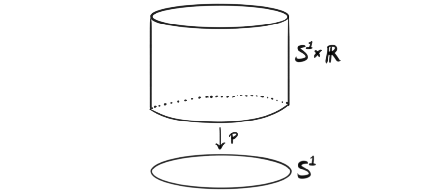
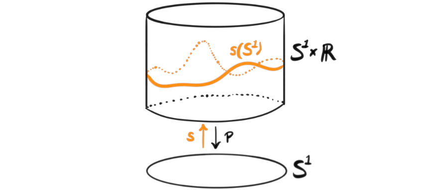
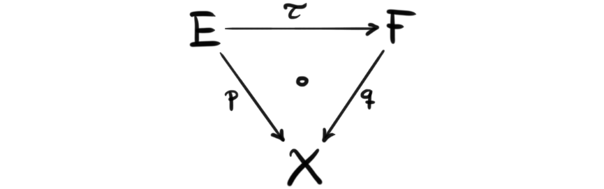
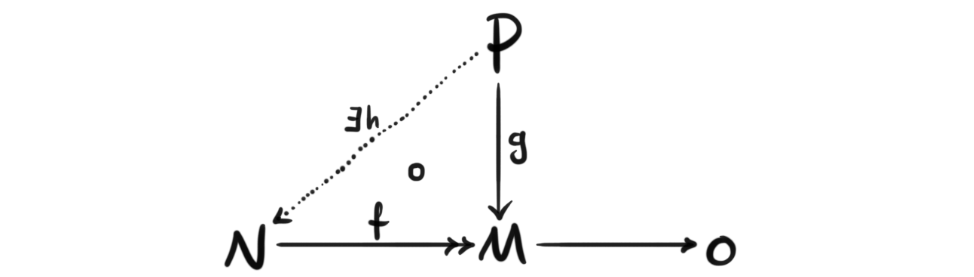

A part of mathematics I really an starting to enjoy more is mathematics that explain or develop connections between geometry or topology, and algebra. The first two posts on this blog was focused on developing some geometrical insight to two lemmas from commutative algebra, namely Noether’s normalization lemma and Zariski’s lemma. There are many more such connections worth discussing and exploring, and today I want to focus on one of these “bridges” between geometry and algebra, namely Swan’s theorem. This theorem tells us how nice objects “over” another object in geometry relate to nice objects “over” another object in algebra.
Before we reveal the connection we are discussing, we go through some preliminaries for stating the theorem precisely. In the informal statement above the object in geometry will be a compact Hausdorff space, and nice objects over it will be vector bundles, while the object in algebra will be a ring and objects over it will be projective modules. I will assume knowledge about rings and point-set topology, but we will develop the notion of projective modules and vector bundles to get a sense of how they are similar and relate to each other.
Vector bundles
In the fibration series we have developed the notion of a fiber bundle, and a vector bundle will be such an object such that all of the fibers are vector spaced instead of arbitrary topological spaces. We developed an intuition that bundles over a space is a map that is locally a projection, and the space above it consists of similar fibers glued together possibly non-trivially.
Definition (vector bundle): Let $X$ be a topological space. A real vector bundle $(E,p)$ over $X$ is a space $E$, called the total space, together with a map $p:E\rightarrow X$ such that for any point $x\in X$, $p^{-1}(x)$ has the structure of a finite dimensional real vector space. In addition we need the bundle to satisfy the local trivialization condition, which says that for every point $y\in X$ there is: an open neighborhood $U\subset X$ containing $y$; a natural number $n$; a homeomorphism $\phi : U\times \mathbb{R}^n \rightarrow p^{-1}(U)$, such that for any point $x\in U$ we have $p\circ \phi (x, v) = x$ for all $v\in \mathbb{R}^n$ and that the map $v\mapsto \phi(x,v)$ is a vector space isomorphism.
The topological space $X$ in the context of a vector bundle is referred to as the base space. If we can choose $U=X$ in the local trivialization, i.e. a global trivialization, we call $(E,p)$ a trivial bundle because we have $E\cong X\times \mathbb{R}^n$ for some $n$. An example would be the trivial one dimensional real vector bundle over the circle, which would be an infinitely tall cylinder, or if we draw the real line as a finite line segment just a normal cylinder.

An important question when studying objects over another object, i.e. some sort of system $p:E\rightarrow B$ where $p$ is at least surjective, is the question of when do we have an inverse map, or even more generally a one sided inverse. If we have a vector bundle $p:E\rightarrow B$, we define a section of the bundle to be a continuous map $s:B\rightarrow E$ such that $p\circ s = id_B$. Such a map always exists when we are discussing vector bundles since we can send a point on the base space to the zero-vector in the vector space that is the fiber over it. This is called the zero section. If our vector bundle is the tangent bundle, then a section is just a vector field on the base space. A graphic example is an embedding of the circle into the trivial bundle we discussed previously.

These maps will be important for proving the theorem as they will function as the way we define the algebraic information by the topological information. Note that there exists a notion of local sections which are exactly the same but is a one sided inverse only on an open neighborhood $U$ instead of on the whole space $X$. Hence sections are also called global seqtions.
The last piece we need about vector bundles are maps between them. If we have two vector bundles $(E,p)$ and $(F,q)$ over the same base space $X$ then a map between them $\tau: (E,p)\rightarrow (F,q)$ is a map $\tau: E\rightarrow F$ such that the following triangle commutes.

Projective modules
The other nice object over another one which will be important for stating the theorem is a projective module over a ring. Recall that a module is an Abelian group together with an action from a ring often called the scalar product. A projective module is characterized by a certain lifting property.
Definition (projective module): Let $R$ be a ring. An $R$-module $P$ is called projective if for every surjective module homomorphism $f: N\rightarrow M$ and every module homomorphism $g:P\rightarrow M$ there exists a lift $h:N\rightarrow P$ such that $g\circ h = f$, i.e. the following diagram commutes.

Notice that we don’t require the lift to be unique, and hence the lifting property is not a universal property. Recall that maps between modules are maps that respect both the additive group structure and the scalar product from the ring.
An example of projective modules are free modules. These modules behave very similar to vector spaces since they always have a basis which makes maps between them describable by matrices. Recall that if a module is generated by a finite set of elements, called its generators, then we call the module finitely generated. In fact projective modules and free modules have a lot in common. By using some commutative algebra one can show that all projective modules are locally free, meaning there exists a cover of ideals such that localization at every ideal in the cover is a free module. We can also define a projective module by being a summand of a free module. This is because there always exists a surjective module morphism from a free module $R^n$ onto any finitely generated module $M$, and by the lifting property the sequence $0\rightarrow ker(f)\rightarrow R^n \rightarrow M\rightarrow 0$ splits, and hence $R^n\cong M\bigoplus ker(F)$, i.e. $M$ is a direct summand of a free module.
Right away, even before discussing the statement of the theorem we can notice that projective modules are locally free modules, and that vector bundles are locally trivial bundles. Since free modules behave very similarly to vector spaces, this hints at a connection between the two notions.
Swan’s theorem
So, we have now defined the objects needed to formulate the theorem. As stated in the introduction, the theorem will relate the objects discussed to each other. To understand how this relation occurs we need a good way of translating topological or geometric objects to algebraic objects, and the way we are going to do that in this theorem is through functions on the objects. If we take some nice topological space we can study the set of continuous real-valued functions on that topological space. Since the codomain, $\mathbb{R}$, is a ring, we can define addition and multiplication of these continuous functions by the addition and multiplication of the real numbers that elements of the topological space map to, i.e. define the operations pointwise. Hence for a nice topological space $X$ we always have a corresponding ring, $C(X)$ of real-valued continuous functions on $X$. This is the correspondence that Swan’s theorem focuses on. The theorem tells us that nice geometric objects over nice topological spaces are the same as nice projective objects over the corresponding nice algebraic objects, or more precisely that real vector bundles over a compact Hausdorff space $X$ are the same as finitely generated projective modules over the ring of real-valued continuous functions $C(X)$. The precise formulation for the theorem encapsulates what I mean by “the same as” in a categorical language, but the information is the same.
Theorem (Swan): The category of real vector bundles over a compact Hausdorff space $X$ is equivalent to the category of finitely generated projective modules over the ring of continuous real functions on $X$.
Just as a quick disclaimer, I won’t cover the entirety of the proof, but we will look at the important pieces and the general idea. Since we have two categories we want to show are equivalent, we should find a fully faithful, essentially surjective functor , in other words an equivalence of categories, that shows that these categories are the same. Let $Vect(X)$ be the category of vector bundles over $X$ and $pmod(C(X))$ be the category of finitely generated projective modules over $C(X)$. If we let $p\in Vect(X)$, i.e. $p$ is a vector bundle $E\overset{p}\rightarrow X$ then we denote the set of all sections of $p$ by $\Gamma(p)$. Notice that $s\in \Gamma(p)$ is a map $s:X\rightarrow E$, and since every point in the image lies in a vector space, we can define addition of sections by adding their images pointwise. We can also define scaling of the sections by continuous real-valued functions on $X$ by letting $f\circ s (x) = f(x)\cdot s(x)$. This in fact makes $\Gamma(p)$ into a $C(X)$-module! If we have a map between two vector bundles over $X$, say $\tau:p\rightarrow q$ then we can define a map between their $C(X)$-modules of sections by post composition, i.e. sending a section $s\in \Gamma(p)$ to $\tau \circ s$. This is a section of $q$ because $q\circ (\tau \circ s)=(q\circ \tau) \circ s = p \circ s = id_X$. These two together form a functor $\Gamma : Vect(X)\rightarrow mod(C(X))$ sending a vector bundle p to its $C(X)$-module of sections $\Gamma(p)$ and a vector bundle map $\tau$ to the $C(X)$–module map $\Gamma(\tau)=\tau\circ (-)$.

To see that this is in fact a functor only to projective finitely generated $C(X)$-modules we first note that trivial vector bundles, i.e. bundles of the form $X\times \mathbb{R}^n \overset{p}\rightarrow X$, correspond to free $C(X)$-modules under the defined functor $\Gamma$. This is because a trivial vector bundle has a finite global basis, i.e. a finite set of sections of which the image of each point in $X$ is a basis for $p^{-1}(x)$, which determines a free basis for the module of sections. The next step is then to prove that every vector bundle is a direct summand of a trivial vector bundle. This only holds for vector bundles over compact Hausdorff spaces, hence the assumption in the theorem. This can be shown through the existence of an inner product on the vector bundle if the base space is paracompact Hausdorff, and hence allowing us to form inner orthogonal complement bundles, i.e. for any subbundle of the original bundle a vector bundle such that their direct sum bundle is the original bundle. If our base space is compact we can do this for every set in a finite trivialization and glue them together by partitions of unity. Our functor, i.e. taking the module of sections does in fact preserve direct sums, hence every $C(X)$-module is a direct summand of a free module, which we saw earlier is the same as being a projective module. Hence, every finite dimensional real vector bundle over $X$ in fact maps to a projective $C(X)$-module. The remaining part is to show that every $C(X)$-module homomorphism between projective modules actually comes from a unique map of vector bundles, i.e. that for every map $F:P\rightarrow Q$ of projective modules there is a unique map $f:p\rightarrow q$ between two vector bundles over $X$ such that $\Gamma(f)=F$. This is a bit tricky to show, but comes mainly from the fact that any compact Hausdorff space is normal, and that we can extend local sections to global on normal spaces.
This is as far as I’ll go into the proof, but we have at least covered the basic elements. The whole proof revolves exactly around showing that the functor $\Gamma$ is an equivalence of categories.
Closing remarks
There are a couple facts that should be mentioned when discussing this theorem. First, the theorem also hold if we instead of real vector bundles use complex vector bundles, and complex-valued continuous functions instead of real-valued ones. It does not however work if we use totally disconnected fields, like the rational numbers $\mathbb{Q}$. Secondly, if we replace every “continuous” by “smooth”, i.e. try to have a version in differential geometry then the theorem still holds. This means replacing our topological space by a smooth manifold, the vector bundle by a smooth vector bundle, continuous functions by smooth functions and sections by smooth sections. Thirdly, there is an earlier version of the theorem in algebraic geometry instead of algebraic topology due to Serre, so the theorem is often named the Serre-Swan theorem. Serre proved that finite dimensional vector bundles over algebraic varieties are also the same as finitely generated projective modules over the similar ring of continuous functions in algebraic geometry. I am following Ravi Vakils summer course on algebraic geometry, so maybe I will cover that version of the theorem after learning some more algebraic geometry.